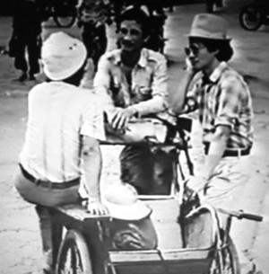
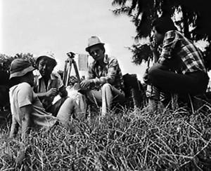
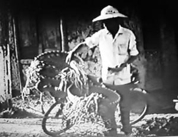
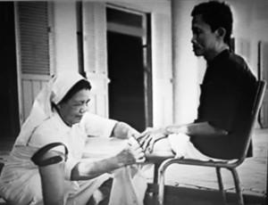

...Làm sao, để khi giã từ thế giới, ta không chỉ nằm xuống như một người tử tế, mà điều quan trọng là ta có thể từ giã một thế giới tử tế hơn, trong đó con người được chăm lo hơn...
☆
Trần Văn Thủy kể với hai chuyên gia người Mỹ, Giáo sư Micheal Renov và Tiến sĩ Dean Wilson về việc làm bộ phim “Chuyện Tử Tế”:
Bộ phim “Chuyện Tử Tế” bắt đầu quay năm 1985, trong hoàn cảnh phim “Hà Nội Trong Mắt Ai” vẫn bị cấm và tôi bị giám sát. Bối cảnh kinh tế xã hội năm 1985 đã thúc đẩy và dẫn dắt tôi chọn đề tài này.
Bắt đầu từ việc một bạn đồng nghiệp rất thân, anh Ðồng Xuân Thuyết đổ bệnh ung thư. Chúng tôi quyết định bấm máy.
Năm sau anh ấy qua đời, một năm sau nữa giỗ đầu. Ðể quay nhân vật này phải mất khoảng hai năm.
Khi quay Ðồng Xuân Thuyết nhiều người trong cơ quan phản đối, cho rằng anh ta không phải là nhân vật đặc biệt gì, không công trạng, không danh hiệu, không đảng viên. Nhưng rõ ràng đó là một thân phận con người nên chúng tôi quay. Ðồng Xuân Thuyết được mọi người yêu quí, không phải là một người quá tài giỏi, giàu có hay có chức quyền gì nhưng cách sống tình nghĩa, chân thành của anh làm mọi người thương và tin. Tôi nghĩ anh bị ung thư, theo lẽ thường, anh không gượng dậy được và chết thì đó là cái cớ để có một bộ phim hay. Nhưng nếu anh không chết thì phim đổ.
Ðã có giai đoạn Thuyết được người bạn tên là Lò Minh cho uống mật gấu và khỏe lên. Thuyết phóng xe máy ầm ầm đến nhà tôi ở Hàng Bún và hét lên: “ Thủy ơi, tao không chết, phim của mày đổ rồi! ”.
Tôi đi xuống đón Thuyết và nghĩ “ nếu phim này không thành công thì làm phim khác, nhưng một thằng bạn tốt như thế mà trời tha, để cho sống thì còn gì bằng ”.
Nhưng vài tháng sau, Thuyết qua đời ở Thủy Nguyên, Hải Phòng, quê anh. Trước khi chết, đêm nào anh cũng gào thét như điên dại. Vâng, chúng tôi theo đuổi nhân vật này hai năm, mở đầu là Thuyết và kết thúc vẫn trở lại Thuyết.
Rồi tôi nghe những câu chuyện về người bệnh phong đã bị rẻ rúng miệt thị, những ông bơm xe là thượng tá, trung tá đã tham gia chiến tranh và có công lao...
Cả đời tôi chưa bao giờ làm một bộ phim mông lung như bộ phim sau này gọi là “Chuyện Tử Tế”.
Ðể làm bộ phim này, anh em trong đoàn làm phim bảo nhau “làm gì biết nấy”. Anh Hồ Trí Phổ tạm viết một kịch bản với cái tên là “Ði từ nỗi đau của con người” – nộp cho lãnh đạo hãng. Nó chỉ là một đề cương nói về tình yêu và sự bất hạnh, về thầy thuốc và bệnh nhân, về những người bị bệnh phong và các bà nữ tu – viết rất vô thưởng vô phạt để cấp trên yên tâm rằng chúng tôi đi làm một bộ phim tầm tầm...
☆
Kịch bản đích thật là không có, nó chỉ dần hình thành trong đầu của đoàn làm phim. Ðấy không phải là tài giỏi gì, tôi khuyên các sinh viên đừng bao giờ làm như thế, đó chẳng qua thần linh nâng đỡ run rủi đưa đẩy tới mà thôi.
Chúng tôi nghĩ rằng trong phim này phải có một anh xích lô, có một tâm trạng hay gia cảnh gì đấy. Chúng tôi đi tìm một anh xích lô ở ga Hàng Cỏ. Giữa những người đạp xích lô đang đứng chờ khách, có một anh cao to đẹp trai, tóc xoăn, mặc quần jean rách. Mấy anh em trong đoàn bảo nhau chắc là nó cà chớn thế nào chứ trông thế này đâu phải dân đạp xích lô. Chúng tôi đến bên cạnh và hỏi:
- Xin lỗi anh, anh có chở khách không?
- Có ạ, em đang chờ khách đây.
- Thế anh là dân xích lô chuyên nghiệp hay là...
- Em làm thật để kiếm sống, em nuôi các cháu và gia đình em chứ ạ.
- Thế anh có thể cho chúng tôi quay anh một đoạn được không?

- Em làm thật để kiếm sống, em nuôi các cháu và gia đình em chứ ạ.
Lúc bấy giờ chúng tôi chỉ nghĩ đơn giản là đưa anh ta ra con đường trước công viên Thống Nhất quay cận cảnh, trung cảnh, toàn cảnh mà chưa có ý gì trong những cảnh đó cả. Nhưng khi đến trước cổng công viên thì trời đổ mưa, cả bọn kéo nhau vào quán uống nước chờ trời tạnh. Chúng tôi hỏi những câu xã giao, anh tên gì, những năm chiến tranh anh làm gì. Anh ta mới kể là chiến sĩ an ninh khu ủy khu 5 - mà tôi cũng ở trong khu 5. Lúc ấy vợ anh cũng vào và làm bác sĩ. Sau khi chiến tranh kết thúc, anh ta làm sĩ quan bảo vệ trong phái đoàn 4 bên ở trại Ða-vít.
Tôi sững người và nghĩ, một thằng ất ơ ngoài đường không hỏi thì thôi, hỏi ra lại là người đã từng công cán như thế. Ðây không phải chuyện đùa nữa rồi, tôi nói:
- Thôi, anh em uống nước đi, đêm nay về nghĩ xem quay cái gì thì quay, viết gì thì viết chứ bây giờ mà quay ngay thì không biết quay cái gì.
Cách làm bộ phim đó là... vừa đi vừa tìm, vừa làm vừa nghĩ mà không có cái gì trước cả. Khi quyết định mời Lê Văn Long quay phim chính - cũng chờ nắng chờ mưa như thế, tôi hỏi chuyện:
- Quê cậu ở đâu?
- Quê em ở Thường Tín. Anh không biết chứ em mà về làng thì oai lắm. Làng em nghèo, toàn chăn vịt, trồng lúa, trồng khoai, làm lặt vặt thôi. Có mỗi em là quay phim...

Cách làm bộ phim đó là... vừa đi vừa tìm, vừa làm vừa nghĩ mà không có cái gì trước cả
Sau đó về nhà cậu ấy chơi, cậu ấy mới kể:
- Hồi bé em đi chăn vịt, có lần mệt quá nên em chui vào một cái lều em ngủ, thế là vịt sục vào ruộng ăn lúa của Hợp tác xã. Các bác ủy ban ghi vào lí lịch như thế nên em không thi được vào trường đại học nào cả. Em thi đại học nào cũng trượt vì lý lịch; về sau loạng quạng thế nào thi được vào trường điện ảnh. Bỗng dưng trở thành quay phim nên em oai nhất làng (lúc bấy giờ trường Ðiện ảnh mới là trung cấp).
Từ hiện trường trở về, tôi vào ngay phòng nhân sự, bảo họ đưa lý lịch của Long. Quả nhiên trong lý lịch của Long, người ta có ghi như vậy!
Câu chuyện Long kể tưởng là chơi nhưng tôi thấy đau quá, vào thời điểm đó chủ nghĩa lý lịch vẫn còn vô cùng nặng nề. Vấn đề không chỉ là của cá nhân Long mà còn là của cả xã hội. Chủ nghĩa lý lịch đã kìm hãm đất nước, ly tán lòng người.
Tại sao một chi tiết nhỏ như vậy mà làm người ta bị sốc? Vì nó đã đụng chạm đến những chuyện một thời đã làm tan nát đất nước này, mà nó cũng kì quặc nữa.
Sau đó Long kể chuyện ngày xưa ở trường Tô Hiệu huyện Thường Tín anh có học một thầy giáo dạy toán tên là Lê Văn Chiêu - một thầy giáo giỏi phải bỏ nghề dạy học đi bán rau. Một trí thức đi bán rau - đấy là không chỉ là chuyện của ông Lê Văn Chiêu mà của cái xã hội bạc đãi trí thức.
Ðưa chúng tôi đến chợ đầu ô phía cuối đường Bạch Mai, Long chỉ một người bán rau và nói:
- Ðấy! Ðấy là thầy giáo của em!
Sau đó tôi nhờ Long đến nhà thầy Chiêu thưa chuyện, xin phép để được quay.
Thầy Chiêu bảo:
- Ðược rồi, khi nào các anh muốn quay thì báo trước. Tôi đi chợ về, tắm rửa sạch sẽ, thay quần áo, pha trà, nói chuyện để các anh quay phim.
Thuyết phục kiểu gì ông cũng không cho quay ở chợ.
Những cảnh trong phim trông đơn giản nhưng để quay được thì rất phức tạp, vì phải làm sao mà quay được khi ông không đồng ý.

- Ðấy! Ðấy là thầy giáo của em!
☆
Cái gì tôi cảm thấy cần và có ích thì bằng mọi cách tôi sẽ làm bằng được. Tôi bảo với Long:
- Ngày kia sẽ quay nhưng em phải ở nhà, không được đến hiện trường.
Tôi nhờ một người quay phim khác, anh Nguyễn Trung Hiếu. Tôi bảo Hiếu giả vờ như quay cảnh du lịch, quay phong cảnh gì đấy, đứng quay lưng về phía ông Chiêu và ở tư thế có thể xoay người 360 độ. Ðấy là tất cả những cảnh quay trộm. Sau này phim ra, tin đồn đến tai ông Chiêu, ông đã tìm đến Trường Ðại học Bách khoa mua vé vào xem và mất ngủ mấy đêm liền. Ông đã gọi Long đến và nói:
- Tôi rất buồn vì người ta nói các anh đã quay phim tôi. Tôi không muốn bêu riếu chế độ. Nhưng rồi nghĩ đi nghĩ lại, tôi thấy các anh chẳng nói điều gì sai đâu.
Ðụng vào phim nhựa, là đụng vào chuyện điều hành xe cộ máy móc, phương tiện thu thanh; vậy mà chúng tôi cứ tha lôi đồ đạc lỉnh kỉnh trên đường với ý định không rõ ràng, nhân vật không cụ thể. Ðó là một điều kỳ quặc, không ai làm như thế cả.
☆
Khi nằm ở bệnh viện Bạch Mai tôi viết được khá nhiều, hầu như trong 10 ngày nằm viện chờ kết quả thử máu, chiếu chụp..., tôi đã viết xong lời bình tương đối ưng ý. Tôi xin ra viện vì tôi khỏe rồi.
Bác sĩ cười và bảo: “ Ông đang trong thời kỳ xét nghiệm chứ đã uống viên thuốc nào đâu, đã chữa chạy gì đâu! ”.
Quả thực là viết xong lời bình, tôi cảm thấy khỏe. Lúc đó sổ khám bệnh của tôi đăng ký ở bệnh viện Việt-Xô, bệnh viện dành cho cán bộ cao cấp. Ở đó được ưu ái hơn, một phòng nhiều nhất chỉ có 3, 4 giường và được phục vụ chu đáo chứ không ồn ào nhếch nhác như bệnh viện Bạch Mai – một bệnh viện, thời đó của thập loại chúng sinh. Phòng bệnh tôi nằm rộng như cái hội trường, có đến mấy chục giường, người bán hàng vào tận nơi rao: “ai xôi đây!”, “ai nước đây!”...
☆
Lý do quan trọng nhất để tôi viết lời bình trong bệnh viện Bạch Mai lại chính là thế. Nằm ở đây tôi mới thấu hiểu ra rằng ở trên đời này không ai tự mình dại dột bỏ cái sự sang trọng, cái đầy đủ, cái quyền thế của mình để lựa chọn cuộc sống như của người thường.
Ở đoạn cuối phim, tôi có viết rằng:
“Trải qua một thời gian dài, rất dài, chúng tôi mới chiêm nghiệm ra rằng: Ðể thấu hiểu nỗi đau của con người không phải là một việc dễ dàng gì.
Vâng! Không thể là một việc dễ dàng gì, nhất là khi ta không sống cuộc sống của người đời.
Chỉ có sống cuộc sống của người đời, chia sẻ những nỗi buồn và niềm vui của người đời, thì may ra mới tìm được, hiểu được, nghĩ được và làm đúng được đôi điều.
Nhưng, cũng như chúng tôi, ít có mấy ai lại lẩm cẩm từ chối một cuộc sống đầy đủ hơn, quyền thế hơn để sống cuộc sống như mọi người – Cái nghịch lý là ở chỗ đó và cuối cùng, dù nhọc lòng, mất công, những điều chúng tôi, những người làm phim biết được chỉ bằng giọt nước, còn những điều chưa biết lại là biển cả”.
Hình ảnh trên phim lúc bấy giờ là cảnh chúng tôi ngồi trên xe ô tô, nhai kẹo cao su, hút thuốc lá, còn người dân thì khổ sở lay lắt ở trên đường, người đẩy xe bò, người gồng gánh. Hình ảnh ấy đi với lời bình ấy.
Nhiều người nhận xét, kể cả Dean và Michael, đây là bộ phim mà chúng tôi tự mang thân xác mình ra để giễu cợt. Ngay từ đầu phim đã thế, khi bị người chủ lò gạch xua đuổi thì chúng tôi bảo: “ Ừ, nghề của chúng tôi cũng chỉ là nghề hèn, nghề mọn. Hèn vì nghĩ nhiều mà không dám nói ra, mọn vì cái làm ra thì không mấy ai cần đến ”.
☆
Cho đến thời điểm 1985, hình như chưa có một bộ phim nào, buổi diễn, bài báo nào công bằng với những người Kitô, tức là nói đến những mặt tích cực của họ khi họ đóng góp trí tuệ, công sức, tình cảm và thậm chí cuộc đời của mình để cứu rỗi con người, lo cho con người.
Phải nói rằng tuyệt đại đa số họ là những người tử tế, biết thương người, biết trọng chữ tín, thật thà, không biết dối trá.
Vào thời điểm làm bộ phim này, khi chứng kiến những nữ tu tận tình chăm sóc người bệnh phong ở trại phong Qui Hòa, tôi rất xúc động. Mấy năm đó, một loạt trại phong trại hủi vẫn là những chỗ chữa bệnh từ thiện. Những cán bộ nhà nước vào làm việc ở đấy phần nhiều là bất đắc dĩ. May mắn là ông giám đốc trại phong Qui Hòa vào thời điểm quay bộ phim “Chuyện Tử Tế” nay vẫn còn sống, ông tên là Trần Hữu Ngoạn, nhà ở ngay đầu chợ Bưởi, gần nhà tôi. Ông như một ông thánh vậy, tốt bụng đến lạ lùng. Ông chính là hiện thân của một người tử tế. Nhờ ông, chúng tôi mới được vào trại phong Qui Hòa để quay phim, được chứng kiến đời sống thật của các nữ tu. Trong phòng của các bà sơ không có bất kỳ cái gì ngoài cái giường, bề rộng 80cm bề dài 1m8, và một bộ quần áo tu treo trên cái đinh.
Và họ sống bất hợp pháp!
Không có hộ khẩu, họ trốn chui trốn lủi từ một nhà thờ nào đó đến trại từ thiện để được phục vụ những người mắc bệnh phong!

...họ trốn chui trốn lủi từ một nhà thờ nào đó đến trại từ thiện để được phục vụ những người mắc bệnh phong!
☆
Họ phải làm vụng trộm vì không được phép.
Khi còn làm thủ tướng, ông Phan Văn Khải đã từng nói chuyện với những người có chức quyền của giáo hội rằng, trong cộng đồng giáo dân, tệ nạn xã hội ít hơn so với bên ngoài. Ít nghiện ngập, trộm cắp, chụp giật, lừa đảo hơn vì con người ta biết sợ dù rằng cái sợ cũng chỉ là vu vơ, không thể giải thích tường tận được. Một xã hội gồm những con người vô đạo, không biết sợ cái gì, không biết tin vào cái gì là một xã hội cực kỳ nguy hiểm.
Trước khi làm bộ phim này, tôi phải đọc khá nhiều.
Napoléon, một con người tiếng tăm lẫy lừng về mặt dùng vũ lực để cai trị thiên hạ nhưng ông cũng là người cho soạn thảo bộ luật dân sự mà bây giờ trở thành nền tảng của luật pháp các nước châu Âu và có thể nói chừng mực nào đó, châu Âu đẻ ra nước Mỹ và nước Mỹ đã thừa hưởng cái tinh thần những bộ luật dân sự của Napoléon.
Có sức mạnh quân sự rồi, có luật pháp rồi, thế là đủ để cầm quyền?
Không!
Ông vẫn cảm thấy con người sống không yên.
Ðến cuối đời Napoléon đã phải thốt lên rằng “ Một dân tộc phi tôn giáo thì chỉ có cai trị bằng súng đạn ”.
Mà cai trị bằng súng đạn có nghĩa là không yên! Qua đó có thể thấy vai trò của tôn giáo quan trọng đến chừng nào.
☆
Bộ phim làm xong thì vẫn để đấy, tuyệt đối không đưa cho bất kỳ ai xem, và phải bịa ra lý do để che giấu đi, trì hoãn việc lãnh đạo hãng nghiệm thu như thường lệ...
☆
Thế rồi cuối năm 1987 bộ phim “Chuyện Tử Tế” ra mắt.
Mọi người đều nói ầm lên đấy là ý kiến của Tổng bí thư, không một hội đồng duyệt nào dám ho he.
Tiếp đó bộ phim được chiếu rộng rãi, trong Nam ngoài Bắc. Ðến lượt “Hà Nội Trong Mắt Ai” “ăn theo”, cũng được chiếu lại và cũng là lần đầu tiên trong lịch sử phim ảnh Việt Nam có chuyện chiếu phim tài liệu mà bán vé lấy tiền.
☆
Ðến tháng 3 năm 1988 tại Liên hoan phim Quốc gia Ðà Nẵng, “Hà Nội Trong Mắt Ai” được giải vàng đặc biệt, giải biên kịch xuất sắc, đạo diễn xuất sắc và quay phim xuất sắc.
Nhưng “Chuyện Tử Tế” bắt đầu bị lờ đi.
Qua một bài báo của Matthias Weile, phóng viên thường trú tại Hà Nội của hãng ADN (Cộng hòa Dân chủ Ðức) được tung lên các tờ báo của Ðông Ðức, rồi lan sang các nước khác. Khi đến Việt Nam tham gia Liên hoan phim Quốc gia tháng 3 năm 1988 tại Ðà Nẵng, hầu hết các đoàn đại biểu quốc tế đã biết có một bộ phim như thế. Ðọc chương trình cũng thấy có phim “Chuyện Tử Tế” nhưng cuối cùng họ không được xem.
Trong đoàn đại biểu quốc tế có một nhân vật rất quan trọng, đó là Santiago Anvares, đạo diễn nổi tiếng thế giới, người Cuba. Ông là người rất có công với Việt Nam, đã từng làm 13, 14 bộ phim về Việt Nam trong thời điểm chiến tranh hoặc làm về chân dung Hồ Chí Minh. Ông được coi là một người rất thân thiết và có uy tín đối với Việt Nam. Ông cũng bảo “ Rất lạ là trong chương trình thì có bộ phim ‘Chuyện Tử Tế’, thế mà chúng tôi không được xem. Các điểm chiếu phim của Ðà Nẵng, nơi diễn ra Liên hoan phim lẽ ra phải chiếu phim cho nhân dân xem nhưng không có chỗ nào chiếu phim đó cả. Thế thì nên cho chúng tôi xem ”.
Vậy mà Ban tổ chức cứ lờ đi và trả lời theo cách mập mờ. Nhưng ông Anvares đòi xem và nhiều đoàn đại biểu khác như Ba Lan, Nga, Cộng hòa Dân chủ Ðức cũng đòi xem.
Lúc bấy giờ tôi vừa nhận giải về “Hà Nội Trong Mắt Ai” và đang cùng bạn bè vui vẻ, tôi không có quyền gì để đòi hỏi rằng trong chương trình có “Chuyện Tử Tế” thì phải chiếu “Chuyện Tử Tế”. Nói thực lòng, không biết đến bao giờ người sáng tác của Việt Nam mới có được quyền đó. Chiếu hay không là do Ban tổ chức, nhưng họ làm theo lệnh của cấp trên là lảng tránh và lờ nó đi.
Mặc dù ngay từ tháng 10 năm 1987, ông Nguyễn Văn Linh đã bật đèn xanh và đến tháng 3 năm 1988, “Chuyện Tử Tế” đã chiếu nát từ Bắc chí Nam rồi nhưng vào thời điểm ấy họ không muốn chiếu nữa. Ðặc biệt họ không muốn bộ phim ấy xuất hiện trong một Liên hoan phim có sự hiện diện của nhiều đại biểu quốc tế.
Hồi đó các đoàn đại biểu như Ba Lan, Nga, Nhật Bản đều muốn bộ phim này đi ra nước ngoài và đến với Liên hoan phim của họ. Ðặc biệt có hai đại biểu thay mặt Liên hoan phim Quốc tế Leipzig thì tha thiết hơn và nói thẳng rằng: “ Liên hoan phim Leipzig đã từng là ngõ ra của tất cả các phim ảnh tài liệu Việt Nam trong thời kỳ chiến tranh. Chúng tôi đã ủng hộ bao nhiêu giải cho miền Nam, miền Bắc Việt Nam, để quảng bá hình ảnh chiến đấu Việt Nam, cuộc chiến tranh giải phóng của Việt Nam. Có lẽ gì, một bộ phim, theo chúng tôi được biết, đã chiếu ở Việt Nam mấy tháng trời mà bây giờ chúng tôi chỉ cần xem lại cũng không được. Ðiều đó thật vô lý .”
Cuối cùng uy tín của ông Santiago Anvares và sự đòi hỏi tha thiết của nhiều đoàn đại biểu quốc tế đã khiến Ban tổ chức phải chấp nhận đưa phim đó ra, nhưng chỉ chiếu riêng cho các đoàn đại biểu quốc tế xem chứ không chiếu cho công chúng!
Buổi chiếu đó như cái gì đó vỡ òa, nhiều đại biểu quốc tế đã nói:
“ Ðây mới là cái cần xem, đây mới là cái quan trọng, nếu không được xem bộ phim này thì chẳng đến Festival này làm gì ”.
Tất cả mọi người đều cổ vũ vô cùng nhiệt thành. Trong đoàn đại biểu quốc tế có hai người, một nam một nữ đến từ Cộng hòa Dân chủ Ðức đại diện cho Liên hoan phim Quốc tế Leipzig. Công an cũng gây khó dễ với họ và can dự vào việc tiếp xúc của họ với mọi người.
☆